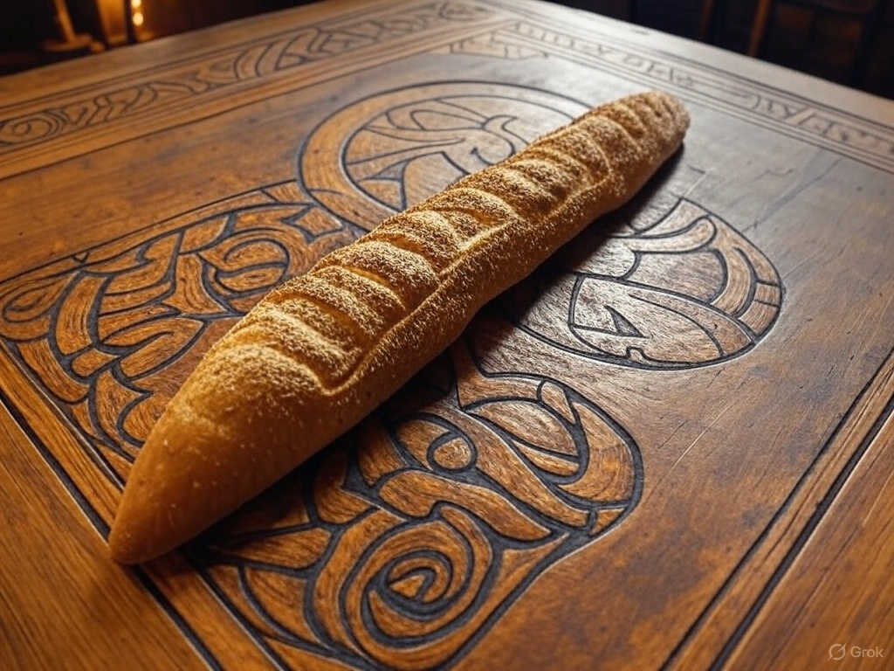

Home
Spear of Gungnir Bread (Rye Bread with Caraway Seeds)

Odin wields the spear Gungnir, a symbol of his authority and prowess in battle. This dense, flavorful bread is
shaped to resemble a spearhead, honoring his warrior aspect.
Description:
A traditional Scandinavian rye bread, hearty and robust, perfect for a warrior’s feast.
Ingredients:
- 2 cups (240 g) rye flour
- 1 cup (120 g) all-purpose flour
- 1 packet (2 ¼ tsp) active dry yeast
- 1 ¼ cups (300 ml) warm water
- 1 tbsp caraway seeds
- 1 tbsp honey
- 1 tsp salt
Instructions:
- Mix yeast with warm water and honey, letting it sit for 5 minutes until frothy.
- In a large bowl, combine rye flour, all-purpose flour, caraway seeds, and salt.
- Add the yeast mixture and knead into a dough (about 10 minutes).
- Cover and let rise in a warm place for 1 hour, or until doubled in size.
- Shape the dough into a long, pointed loaf resembling a spearhead. Let rise for another 30 minutes.
- Preheat oven to 400°F (200°C). Bake for 25–30 minutes, or until the crust is golden and sounds hollow when
tapped.